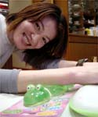
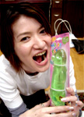
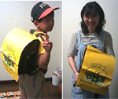
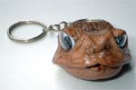
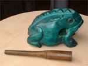
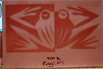
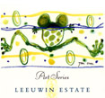

手首も快調カエルパッドで快適生活！ 【江戸発トコトコ同志記者】厚木市にある雑貨屋さん『LONDON屋』にぶらっとはいりカエル雑貨を見ていると、発見しました。なんか不思議なパソコンアイテムです。本当はパソコン使う時に腕をのせて使うもののようですが、冷蔵庫で冷やしてオデコに乗せたら気持ち良さそう。（＾＿＾）
 【全国かえる奉賛会】さっそく大王の知人のサンジューさんに頼んでしようしてもらいました。パソコンのキーボードを長時間タイプし続けていると、とんでもなく疲労するものである。しかし、このカエルWrist Padさえあれば、もー１分間に２０００文字タイプしても、疲れ知らずなのである。手首にかかるふにゃらんとした感触がたまらん。全国の会社や学校は、即座にこの製品を購入して、全社員のパソコン端末に配備しようではないかああああああああ。
社員は、かえるに手首を支えられて、どんどん仕事をこなし、生産効率が著しく向上するぞおおおお。また支給された社員は、手首だけでなく、目がつかれたときは、顔面にのせればひんやりとして気持ちがいいし、ときには、腹の上に乗せたりして、やすらぐのもいいであろう。
サンジューさんの談話『カレシとかにプレゼントされたら絶対うれしい。指輪とか首輪とかよりこれよね！』 筑紫野交通安全協会カエルランドセルカバー装着報告！【福岡発ひさよ同志記者】『筑紫野市無事カエル』のランドセルカバーセットが届きました。
かわいい〜。感激です。ありがとうございます。(^^)
【全国かえる奉賛会】おおーデジカメレポートが到着したぞおおお。大王も会社にランドセルで出勤したいものである。筑紫野交通安全協会は、次回は、大人カエラー向けに、黄色いカエルスーツをネクタイつきで作ってほしいぞおおおおおおおお。頼みます。きっと全国の会社員が、出勤するときに、『無事カエルスーツ』をきることであろうぞ。
カエルキーホルダーをゲット！ 【帝都発kerohiro同志記者】つつ遂に見つけました。ず〜〜と昔から探していたものに出会った喜びは、言葉にできません。大王様もご存じの「剥製にしたカエル」このカエルを探していたんです。ところがひょんなところで、偶然、バッタリと出会ってしまったんです。場所はお婆ちゃんの原宿で有名な「巣鴨・地蔵通り商店街」の中程にある「石栄堂印房」さんの店頭にぶら下がっていました。何故印鑑屋さんにカエルが？まあ堅いことはぬきにしましょう！お婆ちゃんの原宿には何でもありなんです（笑）ゲットしたカエルは「ポシェット、３０００円」と「頭だけのキーホルダー、５００円」でした。店員さんの話によると、出身地は「沖縄」とのこと・・・残りは、あと２匹でしたよ、早い者勝ち？ところで沖縄県のカエラーさん！沖縄には、この手のポシェットをぶら下げたギャルが町を闊歩しているんですか？ 情報を！！ 一応、ホームページのケロヒロ食堂「おもちゃ」「なまもの」コーナーにUP!!しました。 http://www.ne.jp/asahi/hobby/hanken/ けろひろ様直筆署名@..@ (----) kerohiro
カエルポシェットをぶら下げたギャルが町を闊歩へ!【全国かえる奉賛会】ぐおおおおおおっ。これって、ヴィトンが出したカエルバッグも真っ青な、前衛バージョンバッグですね。製作者は、いますぐに現物６００個を準備して、ルイヴィトン社に売り込もうではないかあああああ。『これはすごい、さっそく秋の新作に投入しよう』と話はとんとん拍子にまとまって、この秋は、街頭に、カエルポシェットをぶら下げたギャルが町を闊歩するでありましょう。緑のカエル木魚を収集！ 【神奈川発トコトコ同志記者】海老名市のビナウォークにある『karako』という雑貨屋さんでカエル雑貨を鑑賞。（笑）カエル木魚？口に加えたスティックを引き抜き背中のガタガタしたところをこする。→ケロケロケロケ………と音がする。大・中・小とサイズあり。他にも色々なカエル雑貨あり。
裏口に置いてあったブロンズかえる（何万円だったか丸が多かった）をみるに、ココのお店の人はカエル好き？
今年もカエル砂像に挑戦決定！ 【福岡発八幡中央高校松崎教諭同志記者】昨年の夏に芦屋海岸で巨大カエルを制作した八幡中央高校芸術コースのものです。その折は感状や素晴らしいカードを送っていただきまして有り難うございました。今年も『かえる』で頑張りたいと思います。応援のほどよろしくおねがいします。
八幡中央高校の優勝目指しカエラーの全国的支援を！【全国かえる奉賛会】カエルデザインのカードありがとう。福岡県の芦屋海岸で繰り広げられる砂の祭典の季節が今年もやってきました。昨年、偉大な作品を建設しながら、内外の評価が思わしく無く、ちょっとしょげていた同校を、もー全国かえる奉賛会の全力をあげて支持表明したときには、審査が終わっていたのである。今年は、出場前に連絡を受けたからには、かならずグランプリ獲得させるために、全国のカエラーの支援のもとで、偉大なカエル主義に目覚めた、八幡中央高校を支援して倒れるまで、がんばろうではないかあああああああああああああああああああああ。
八幡中央高校芸術コース→カエル砂像建設実行委員会（八幡中央高校松崎教諭）宛に期待のメールを送ろう！
レストランのカエルデザインメニュー！ 【江戸発Ｎｙａ−ｎｙａ−ｙｏ同志記者】とある東京のレストランで発見しました！ この「ＬＥＥＵＷＩＮ ＥＳＴＡＴＥ」というシリーズはいろんなアーティストのイラストをラベルに使っているんだそうです。
その中でもかえる様にあたるなんて、なんか運命を感じました。しかし・・・この作家名が読めない。何とかＴＯＭさんです。すごーく気に入ってます。
かもめーる切って図案はカエル！【日本発けろ同志記者】私は、行きつけの化粧品店からのＤＭで知ったんですが、今年のかもめーるのの切手の絵が「かえる」になってるの知ってました？残念ながら、わたしのデジカメさんは今故障中で写真を送れないんですが、これは一大ニュースだと思ってメールしました。
全国の郵便やさんが配ってる葉書に蛙ちゃんが載ってるということは、郵政省が、民営化を前に、慌てて「国家蛙化計画」を決行したということではないでしょうか？
カエル姉妹展開催さるうううう！【福岡発かえるや麻太郎同志記者】２００２年７月３０日〜８月４日まで福岡市中央区天神のギャラリーおいしという所で初めての姉妹展をします。私はかえるコレクターではありませんが、主にかえるをモチーフにした焼き物を趣味で細々と作っています。 妹はステンドグラスをやっていますが、もしお近くにお出での際は是非遊びに来てくださ〜い☆ ギャラリーおいしの連絡先は０９２−７２１−６０１３です。 福岡かえる展には過去２回オジャマさせていただきましたが、いつもたくさんのカエラーに圧倒されます。 これからも楽しいイベント、楽しみにしていま〜す。
投稿採用者に武功カエル徽章を授与！ |


かえる古新聞過去に取り上げた記事を見出し付きで一覧したい人は、ここをクリック◆創刊号を見る◆先週号を見る◆話題の号を見る◆かえる新聞の昔を読む
|
私も入っています。。全国かえる奉賛会
大王様に会うには、このバナーをクリック。ずっと奥に写真館があるぞ。全国かえる奉賛会に入会するには、自分のホームページのどこかに、下の部分を追加するとバナーがリンク付きで表示されるぞ。どんどん入会しましょー |


|